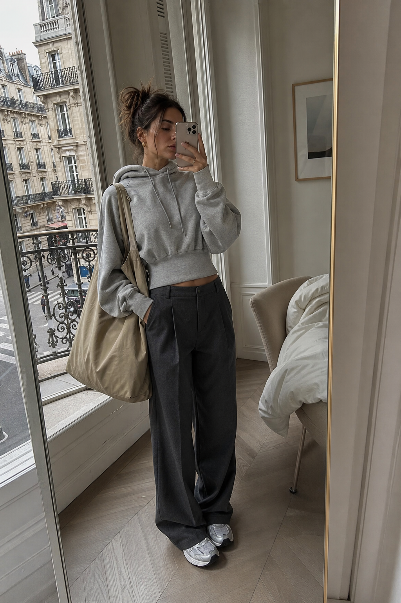
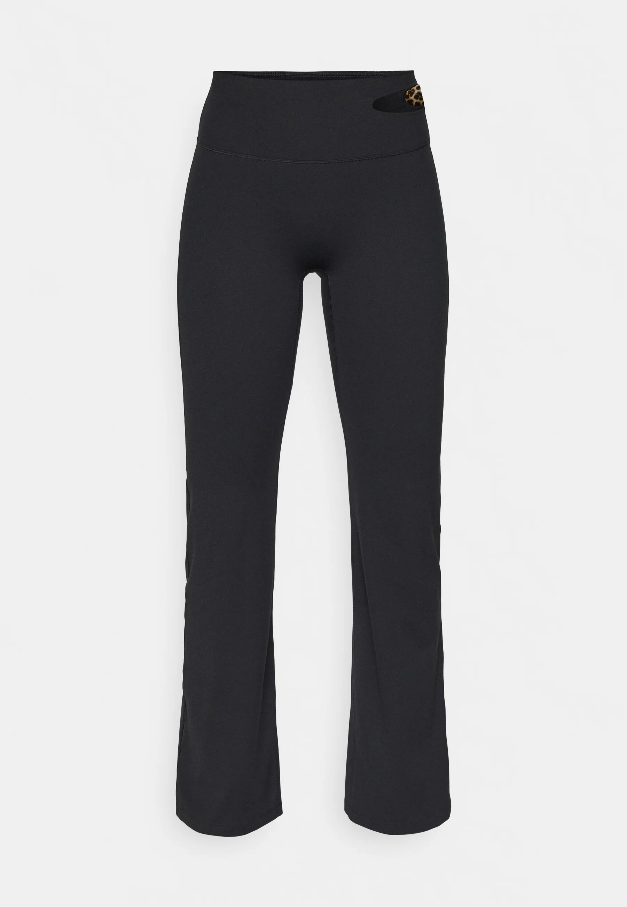
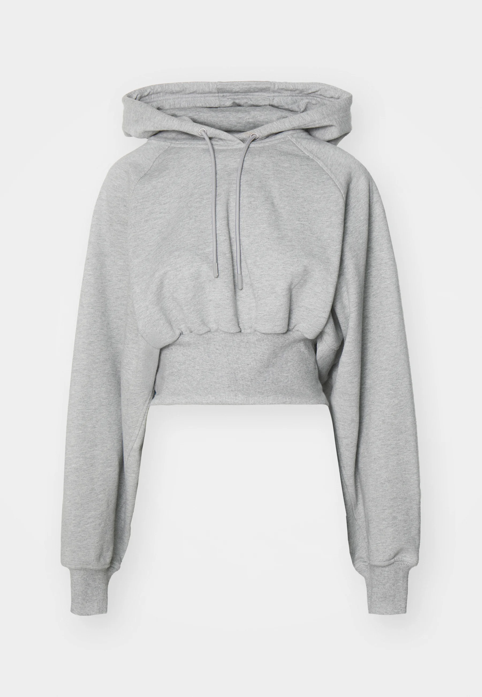
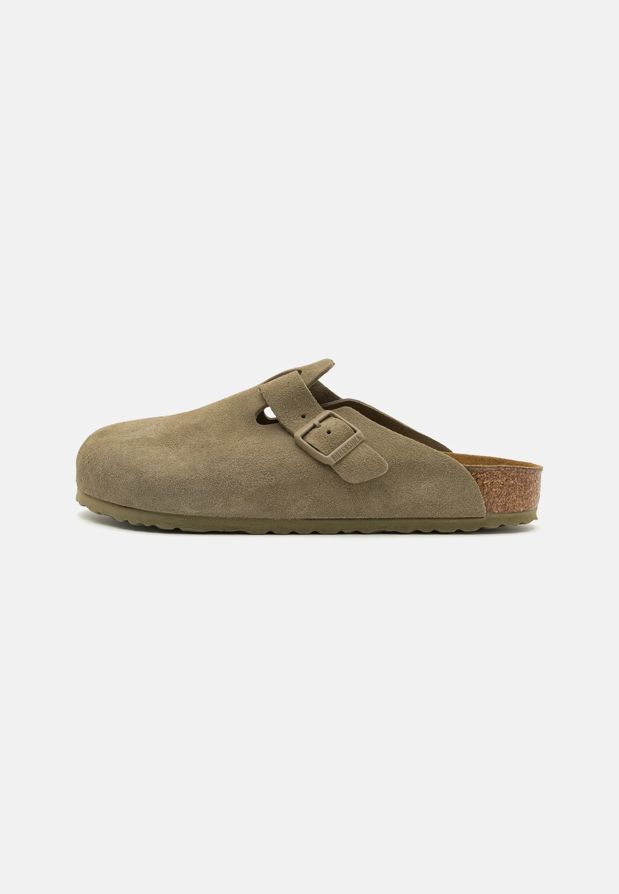
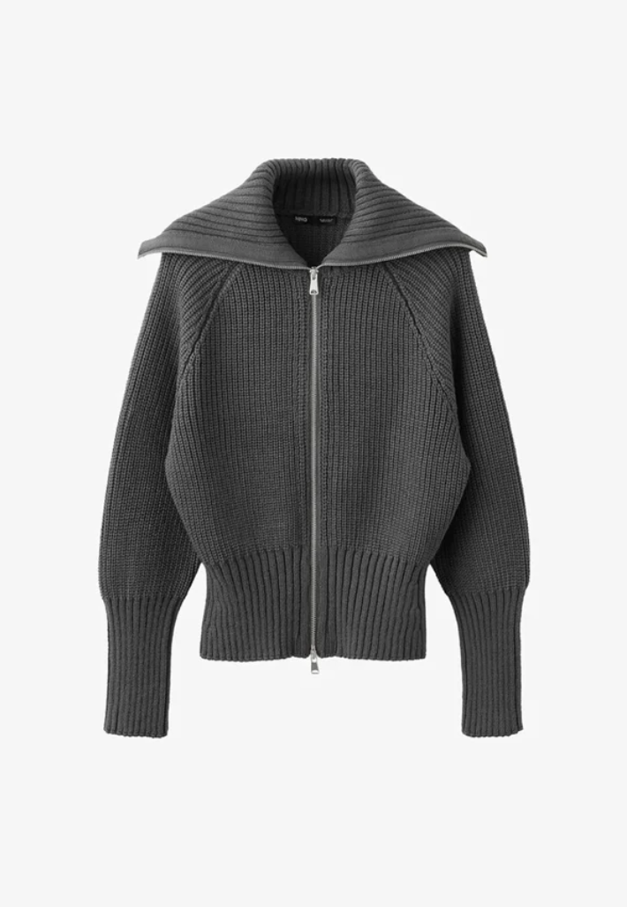
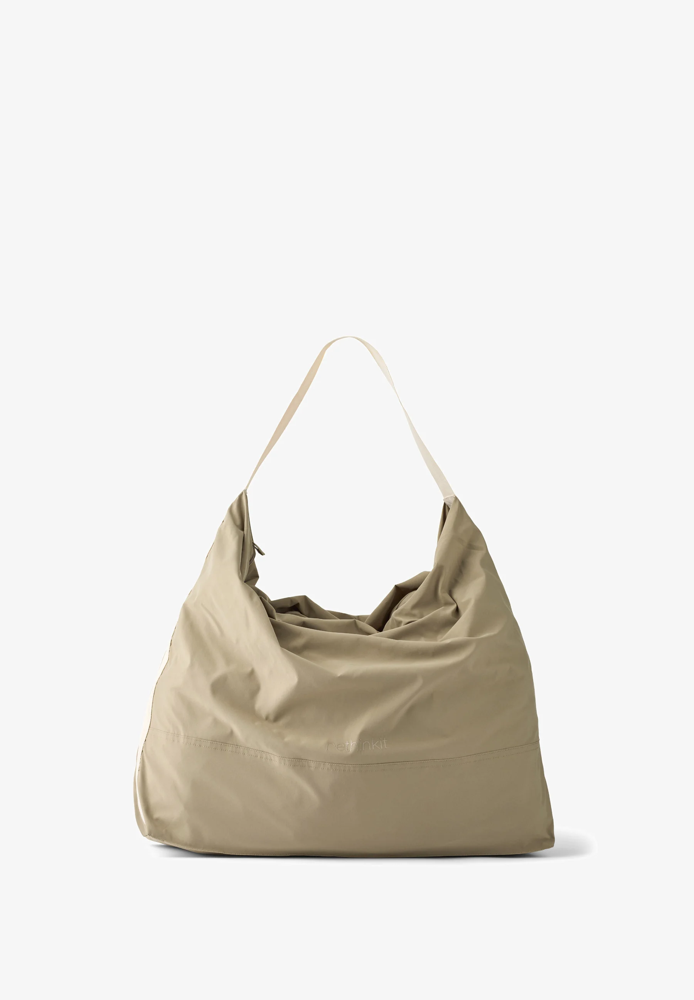

Athleisure used to mean leaving the gym in something you'd never wear to lunch. In 2026 — Pinterest's most pinned off-duty boards say the opposite. The trend is "real clothes that move with you": flared yoga pants worn with a tailored blazer, a cropped hoodie tucked into wide-leg trousers, a slouchy carryall instead of a backpack. The new rules are simple — pick five quiet pieces, layer them well, and the same outfit takes you from a Sunday flow class to brunch without a costume change.


Why Athleisure Grew Up
The era of matching head-to-toe lycra is over. The look on Pinterest right now is softer, slower, and styled like a Parisian who happens to own yoga mats — neutral palettes, elevated fabrics, a single workout piece per outfit. Think wide-leg flared leggings instead of compression tights. A cropped hoodie instead of an oversized sweatshirt. Suede clogs instead of training shoes.
The pieces below are the five we keep seeing pinned on the boards that read "capsule wardrobe", "clean girl aesthetic", and "off-duty model". None of them shout. All of them work three ways: gym, errands, café.
The Edit

The kick-flare is the leg shape Pinterest cannot stop saving. A high, smooth waistband, a clean column down the thigh, then just enough flare at the hem to feel like a real trouser. The result: a yoga pant you'd genuinely wear with a blazer.
Style with a fitted ribbed tank for the studio, swap to a cropped hoodie and clogs for coffee. The bootcut hem covers a multitude of shoes — sneakers, mules, even a low boot once the weather turns.
Yoga Brunch Travel Day
A perfect cropped hoodie is the single most-saved athleisure piece of the season — and Stella's gathered-hem version is why. The cinched waist gives it shape (so it doesn't read sloppy), the drop-shoulder gives it ease (so it doesn't read tight), and the grey marl looks luxe with almost everything.
Layer over a slip skirt, with tailored trousers, or — yes — with the bootcut legging above. It's the bridge piece between gym and not-gym.
Pilates Café Day Wfh Layering
If you only buy one shoe this season, make it the Boston. The taupe suede works with everything — wide-leg jeans, slouchy trousers, a slip dress, even your gym leggings on a coffee run. It's the most-pinned shoe on Pinterest right now for a reason: it photographs like a vintage staple and feels like a slipper.
Pair with chunky white socks for that off-duty European look, or wear bare with cropped trousers.
Errands Brunch Weekend
The piece that turns activewear into outerwear. A heavy ribbed cardigan with a stand-up collar and a zip front — half jumper, half jacket. Wear it over a yoga bra and leggings on the way to class; throw it on over a tee and wide-leg trousers afterwards. Same garment, two completely different outfits.
The charcoal marl is a quiet hero — neutral enough to disappear, structured enough to read intentional.
Layering Commute Cool Mornings
Forget the gym tote with a logo the size of a billboard. The new shape is soft, slouchy, single-strap — a nylon hobo that fits a yoga mat, a laptop, and your lunch but reads like an off-duty model's weekend bag. The muted olive-khaki goes with every neutral and looks better the more you wear it.
Throw it over your shoulder with a hoodie and leggings, or pair with a blazer and wide-leg jeans. It's the bag that makes everything else look intentional.
Studio Bag Weekend TravelHow To Wear It
Build the outfit around one workout piece — not two. If the leggings are athletic, the top should read like a real garment (knit, blazer, tailored shirt). If you're wearing a cropped hoodie, balance it with structured trousers or a midi skirt rather than matching leggings. The Pinterest formula is "one piece from the gym, the rest from the wardrobe."
Stick to a single neutral palette — charcoal, oat, taupe, cream — and the look reads put-together no matter how comfortable the fabrics actually are. That's the whole trick. The pieces above all live in that quiet palette, which is why they multiply outfits without adding visual noise.
More Edits Like This
Pinterest trend reports, curated edits, and the products our editors are saving — all in one place.
Read the Blog